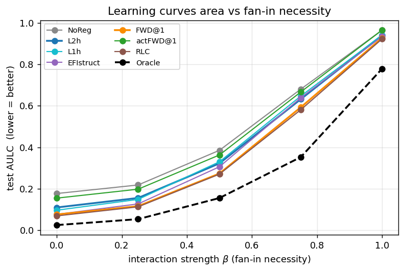
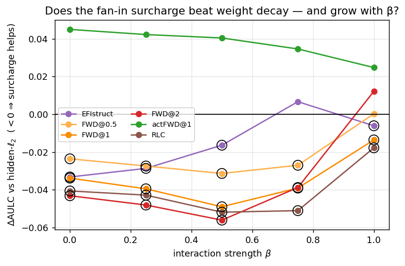
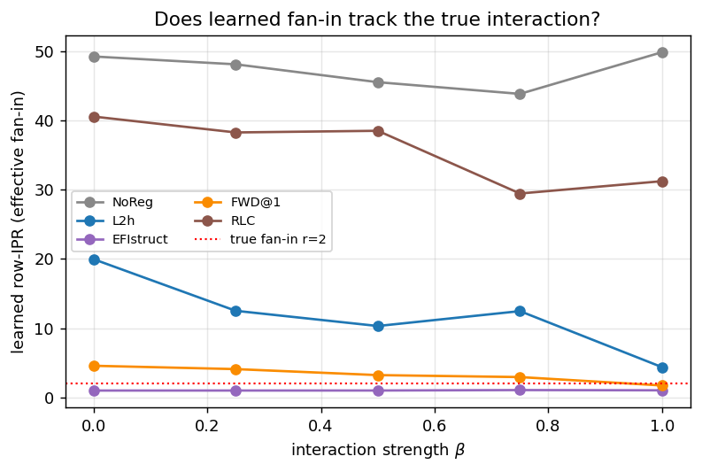
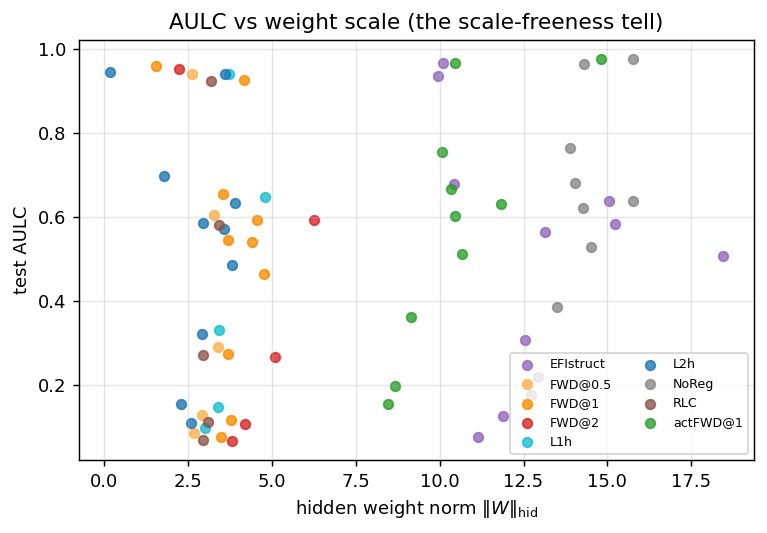
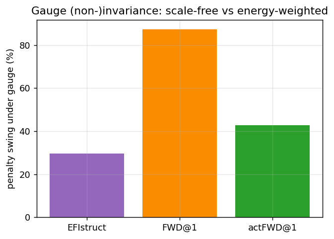

TL;DR. A computation graph with bounded fan-in — every node reads few parents — should be cheaper to learn than its ambient width suggests. We ask two things of a trained ReLU network. Can we measure how bounded-fan-in its computation is, from its weights alone? No: any weight functional invariant to a rotation of the input basis is a function of the output Gram \(WW^\top\), which cannot read coordinate fan-in (Prop. 1); the offline bench confirms no atomic readout is both basis-agnostic and fan-in-calibrated. Does penalizing a fan-in-weighted complexity beat ordinary weight decay on targets where fan-in is genuinely required? We test fan-in-weighted decay — hidden-\(\ell_2\) carrying a multiplicative surcharge on each row's effective parent count — against the nested null \(\alpha{=}0\) (which is hidden-\(\ell_2\)) across an interaction-strength ladder that dials fan-in from 1 to 2, with a structure-known oracle as the ceiling. The surcharge earns a small, robust win over weight decay (\(\Delta\)AULC \(\approx -0.03\) to \(-0.05\), \(p\lt10^{-4}\), and it survives extending the decay grid until the baseline's own optimum is interior) — but as a nuisance-rejecting, fan-in-lowering regularizer, not a bounded-fan-in learner: its advantage does not grow with fan-in necessity (it is smallest exactly where fan-in 2 is most needed), learned fan-in falls toward \(1\) rather than rising to \(2\), the penalty swings \(87\%\) under a function-preserving rescale, and the structure-known oracle keeps a large lead (widest near \(\beta{=}.75\)). You cannot measure bounded fan-in basis-agnostically, and penalizing a coordinate surcharge helps — for the wrong reason.
1. Why bounded fan-in
Many functions worth learning factor through a sparse computation graph: a moderate number of intermediate quantities, each a function of only a few others, composed to depth. A digit-sum reads pairs; a physical energy sums local interactions; a parser combines adjacent constituents. The defining structural feature is bounded fan-in with unbounded fan-out: each node \(v\) reads at most \(r\) parents, but any node may be reused by arbitrarily many children. Fan-in is the rate-setting quantity. If a target is a composition of gates each depending on \(r\) of \(d\) inputs, the statistical difficulty scales with \(r\) — the hardest local piece — not with the ambient \(d\); a learner that confined each unit to read \(r\) coordinates would pay the \(r\)-dimensional sample cost, not the \(d\)-dimensional one. The sibling study emergent_modularity found that confining a network to the correct low-fan-in structure is exactly what buys sample efficiency and compositional generalization — but it priced confinement with an oracle partition. The question here is whether a network can be pushed toward bounded fan-in using only quantities read off its own tensors — no per-neuron representation, no oracle.
This study is the oracle-free arm of that program, and a derivative of axon–dendrite (which delivered the fan-in/fan-out asymmetry through a learned geometry that received no task gradient) and of sample_efficiency_foundations (whose thesis — the rate-setting effective fan-in is a rotation-invariant property of the function class — becomes the invariance axiom below).
2. Two questions
"Use bounded fan-in" splits into two separable problems, with opposite outcomes. The first is measurement: is there a smooth scalar \(F(W)\) that reads "this network computes with low effective fan-in," ideally in the NOTEARS spirit (a differentiable functional, not a combinatorial count) and ideally agnostic to the hidden dictionary — giving the same reading whether the network represents its features axis-aligned or in some rotated/overcomplete basis. The second is regularization: does penalizing a fan-in-flavored complexity during training buy sample efficiency that the symmetric baselines (no regularization, \(\ell_1\), \(\ell_2\)) cannot, on targets that genuinely have bounded-fan-in structure? The measurement question has a clean negative answer; the regularization question is the one the campaign settles.
3. The measurement obstruction
The atomic object is the row inverse participation ratio (IPR). For a receiving unit \(u\) with incoming weight row \(W_{u,:}\), writing \(S_{uv}=W_{uv}^2\) for the edge strengths,
\[\begin{equation}\label{eq:ipr} b_u \;=\; \frac{\bigl(\sum_v S_{uv}\bigr)^2}{\sum_v S_{uv}^2} \;=\; \frac{\lVert W_{u,:}\rVert_2^4}{\lVert W_{u,:}\rVert_4^4}\;\in[1,\,m_{\rm in}], \end{equation}\](\(m_{\rm in}\) is the incoming dimension of the row) the effective number of parents \(u\) reads: \(b_u{=}1\) for a one-hot row, \(b_u{=}k\) for \(k\) equal weights. It is scale-free, \(b_u(cW_{u,:}){=}b_u(W_{u,:})\), so it reports a row's shape, not its size. Read in the neuron basis, \(b_u\) is calibrated to coordinate fan-in. The trouble is the basis. The rate-setting fan-in we care about is a property of the function; a network free to choose its hidden dictionary can compute the same function with dense rows in a rotated basis. A useful measure should be blind to that choice — and that is exactly what coordinate fan-in cannot be.
Proposition 1 (no basis-agnostic fan-in measure). Let \(F\) be a scalar functional of a weight matrix \(W\in\mathbb{R}^{m\times n}\) that is invariant under right multiplication by every orthogonal \(Q\in O(n)\): \(F(WQ){=}F(W)\). Then \(F\) is a function of the output Gram \(WW^\top\) (the maximal right-\(O(n)\)-invariant of \(W\)). But coordinate row fan-in is not right-invariant: there exist \(W\) with every row \(k\)-sparse and \(Q\in O(n)\) such that \(WQ\) has fully dense rows while \((WQ)(WQ)^\top{=}WW^\top\). Hence no right-rotation-invariant \(W\)-only functional can equal or calibrate to coordinate row fan-in across bases.
The bench confirms the dichotomy. An offline calibration test reads each candidate measure on a planted \(k{=}3\) fan-in code and on a rotated copy of the same function. The coordinate row-IPR \eqref{eq:ipr} reads \(2.92\) on the axis-aligned code (close to the true \(3\)) but \(11.84\) once rotated — calibrated, but basis-committing. A spectral participation ratio of the singular values reads \(10.96\) on both — basis-agnostic, but blind to the parent count it is meant to report. No atomic readout is both. The honest measurement claim is therefore a negative one: you cannot read dictionary-agnostic bounded-fan-in off the weights; any concrete fan-in penalty must commit to the neuron basis and pay the parameterization-dependence that commitment brings.
What the basis-committed prior buys, on its own. Penalizing exactly that
scale-free coordinate measure — a gated mean of \(\log b_u\) over hidden rows (efistruct)
— against the representation-free baselines improves the AULC (area under the
test-error learning curve, lower is better; §6) over unregularized training and drives coordinate
fan-in toward \(1\).
But the gain does not survive a fair control: a readout-matched hidden-only \(\ell_2\)
(weight decay on the same layers, excluding the output unit) tied it (area-under-curve \(0.339\)
vs \(0.338\), paired \(p{=}0.76\) over 15 replicates), and the penalty moved \(10\)–\(17\%\)
under function-preserving ReLU rescalings — the gauge dependence Prop. 1 anticipates. Reading
fan-in off \(\lvert W\rvert\) and penalizing it, by itself, bought nothing over weight decay. That
null is the starting point for the rest of this report: if a fan-in prior is to matter, it must be
shaped so its surcharge is not redundant with controlling weight magnitude, and tested where fan-in
is actually required.
4. Fan-in-weighted decay
The scale-freeness of \eqref{eq:ipr} is the defect: it says "keep each row spiky" but nothing
about keeping the computation small, so it can be satisfied by large spiky rows and leaves weight
magnitude — what weight decay already controls — untouched. The fix is to fold the fan-in reading
into the magnitude penalty as a multiplicative surcharge rather than a standalone
term. Writing \(T_u=\lVert W_{u,:}\rVert_2^2\) for a row's incoming energy and \(b_u\) for its
IPR \eqref{eq:ipr}, fan-in-weighted decay (FWD) is
summed over hidden rows of every fan-in linear (the readout is excluded throughout, so the comparison is readout-matched). The exponent \(\alpha\) is the whole experiment. At \(\alpha{=}0\), \((b_u)^0{\equiv}1\) and \(\Omega_{\rm FWD}=\sum_u T_u=\lVert W\rVert_{\rm hid}^2\) — exactly hidden-only \(\ell_2\). At \(\alpha\gt 0\), a high-fan-in row pays more than a low-fan-in row of the same energy: for a row of \(k\) equal weights of magnitude \(a\), \(T_u{=}ka^2\) and \(b_u{=}k\), so \(\Omega_u=a^2 k^{1+\alpha}\) — a row cannot grow wide for free, the property raw IPR lacked. The null \(\alpha{=}0\) is thus nested inside the method: the decisive question is whether \(\alpha\gt 0\) beats \(\alpha{=}0\), same penalty family, same code path.
Two variants probe what the surcharge should read. The activation-conditioned
form replaces structural energy with realized contribution, \(S_{uv}(x)=(W_{uv}h_v(x))^2\), and
averages over inputs (actFWD): it prices the fan-in a unit actually uses,
and the receiver-to-parent message \(W_{uv}h_v\) is invariant under a parent's ReLU rescale, so
its reading of a unit's fan-in as seen by its children is gauge-stable (though the unit's own
incoming energy is not — §7 measures the residual swing). A non-scale-free alternative replaces the
IPR entirely with a soft row cardinality \(c_u=\sum_v\log(1+W_{uv}^2/\tau^2)\) penalized as
\(\sum_u c_u^{\,p},\ p{\gt}1\) (RLC): \(\ell_2\)-like for small weights, log-growing
for large (so big one-hot rows are not free), with the row exponent making many active parents
super-additively expensive. All three are pure functionals of the network's own tensors. A fourth
reading — the Jacobian fan-in \(S_{uv}=\lvert\partial h_u/\partial h_v\rvert^2\) — collapses to the
structural form on a ReLU MLP, where \(J=\operatorname{diag}(\phi')W\), so it is folded into FWD
here and would diverge from it only on gated, normalized, or attention layers, which this study
does not use.
5. The interaction benchmark
Additive-dominated targets — \(\approx 84\%\) first-order (main-effect) mass — let a fan-in-1 learner nearly suffice, so a benchmark drawn from them never requires fan-in 2, and a method that confines to fan-in 1 is taking a valid shortcut, not failing. The fix is a target family whose fan-in necessity is a controlled dial. Each node is a function of \(k\le r\) parents built from a single random Gaussian Fourier map \(\phi\), split by its exact functional-ANOVA decomposition (closed-form for \(z\sim\mathcal N(0,I)\), since \(\mathbb E[\cos(\omega\!\cdot\!z+b)]=e^{-\lVert\omega\rVert^2/2}\cos b\)) into its additive part \(\phi_{\rm add}\) (the sum of one-dimensional main effects) and its pure-interaction residual \(\phi_{\rm int}=\phi-\phi_{\rm add}\) (all \(\ge 2\)-way terms, zero main effects), then mixed:
\[\begin{equation}\label{eq:beta} g_\beta(z) \;=\; \sqrt{1-\beta^2}\,\widehat\phi_{\rm add}(z)\;+\;\beta\,\widehat\phi_{\rm int}(z), \qquad \beta\in[0,1], \end{equation}\]with each part standardized to unit variance. Because the ANOVA parts are \(L^2\)-orthogonal, \(\mathrm{Var}\,g_\beta{=}1\) for every \(\beta\) and the node's interaction (non-additive) Sobol mass is exactly \(\beta^2\): \(\beta{=}0\) is additive (fan-in 1 suffices), \(\beta{=}1\) is pure interaction (fan-in \(\ge 2\) necessary), and \(\beta\) in between is increasingly interaction-dependent but still learnable. A one-parent node has no interaction and stays additive regardless of \(\beta\). Composing these gates over the random graph \(G(d_{\rm eff},\nu,N,r,\Delta,\kappa)\) — \(d_{\rm eff}\) signal inputs, \(N\) nodes in \(\Delta\) tiers, fan-in \(\le r{=}2\), reuse bias \(\kappa\), \(\nu\) nuisance inputs never read — gives a target whose measured interaction mass climbs monotonically with \(\beta\) (verified: \(0.03\to0.94\) across the ladder).
The headline ladder sweeps \(\beta\in\{0,.25,.5,.75,1\}\) at depth \(\Delta{=}2\) with \(\nu{=}4\) nuisance inputs and reuse \(\kappa{=}1\). Two further axes test where a fan-in prior should help most: a nuisance sweep \(\nu\in\{0,2,4,8\}\) at \(\beta{=}.75\) (more irrelevant inputs ought to favor a prior that ignores parents) and a depth sweep \(\Delta\in\{2,3\}\) (compositional reuse is where structure should pay over isotropic decay).
The oracle ceiling. A structure-known network — one small MLP per node, wired to only that node's true parents (bounded fan-in, nuisance-blind by construction), composed in tier order with a learnable readout over terminals — bounds what knowing the graph buys. If the oracle beats the dense baselines but the fan-in priors do not, the bottleneck is graph discovery (the gap a prior could close); if the oracle does not separate, the cell is not testing fan-in. A pre-flight confirmed the regime: the oracle's AULC advantage over an unregularized dense net grows across the interaction ladder, so fan-in genuinely matters more as \(\beta\) rises — the benchmark spans the fan-in-easy to fan-in-hard range.
6. Setup
Every condition trains the same model — an MLP of width \(128\) and depth \(\Delta{+}2\) with ReLU — by AdamW (learning rate \(2\times10^{-3}\), cosine schedule, batch \(64\), \(4000\) steps), with the penalty coefficient annealed from \(0\) to its target over the first \(10\%\) of steps and the best-validation-MSE checkpoint kept for evaluation. Each cell is replicated over \(5\) training seeds \(\times\ 3\) graph draws \(=15\) replicates; the in-range evaluation pool is split into disjoint validation (for selection) and test (reported once) halves. The metric is AULC, the area under the test-MSE-vs-\(\log n\) curve over \(n\in\{64,128,256,512,1024,2048\}\) (lower is better; \(\mathrm{Var}\,y{=}1\), so AULC near \(0\) is near-perfect and near \(1\) is no better than predicting the mean). Each method's coefficient is chosen per cell by minimum validation AULC over an eight-point grid — the same trial count for every method (equal HP-search budget). FWD is swept over \(\alpha\in\{0.5,1,2\}\), all \(\gt 0\), so the surcharge cannot collapse onto its own null; the null is the separate readout-matched hidden-\(\ell_2\) baseline (\(=\) FWD at \(\alpha{=}0\)), and RLC's \((\tau,p)\) are likewise separate conditions. Every fan-in penalty is taken over each non-readout linear (the input layer included; the readout is excluded throughout, so the comparison is readout-matched). Significance is a paired Wilcoxon and effect size a paired Cohen's \(d_z\), both paired by \((\text{seed},\text{graph})\) against that null (a method beats it when \(d_z\lt 0\) at \(p\lt 0.05\)); figures plot replicate-mean AULC (no error bands — significance is carried by the paired tests). The pre-registered primary endpoint is the method\(\times\beta\) interaction — whether the surcharge's advantage over weight decay grows as fan-in becomes necessary (\(\beta\!\uparrow\)) — not a single-cell win.
7. Results
The surcharge beats weight decay — but by an amount that does not grow when fan-in becomes necessary. Every method's AULC climbs from near-zero at \(\beta{=}0\) (additive, a fan-in-1 learner suffices) toward one at \(\beta{=}1\) (pure interaction), and the structure-known oracle keeps a large lead, widest at mid-ladder (Fig. 1). Against the readout-matched hidden-\(\ell_2\) null — each at its val-selected coefficient — the fan-in surcharge FWD wins across the whole ladder: FWD\(@\alpha{=}1\) lowers AULC by \(0.034\)–\(0.049\) for \(\beta\le.75\) (paired \(d_z\) from \(-4.3\) to \(-10.9\), \(p\lt10^{-4}\)) and still by \(0.014\) at \(\beta{=}1\) (\(d_z{=}-2.2\)). This win survives extending the weight-decay grid upward until \(\ell_2\)'s own optimum is interior — it is not an under-regularized-baseline artifact. But the advantage does not grow with \(\beta\) as the fan-in hypothesis requires: it is roughly \(\beta\)-independent, peaking at \(\beta{=}.5\) (\(-0.049\)) and smallest exactly at \(\beta{=}1\) (\(-0.014\)), where fan-in 2 is most necessary (Fig. 2). The pre-registered method\(\times\beta\) interaction is thus the wrong sign: the surcharge helps about equally whether or not fan-in is needed, and least when it is needed most. RLC (the non-scale-free shrinkage variant) is the most consistent, beating the null at every \(\beta\) (to \(-0.018\) at \(\beta{=}1\)); the activation-conditioned actFWD is worse than the null everywhere (\(+0.025\) to \(+0.045\)); raw structural IPR (efistruct) wins at low \(\beta\) but ties by \(\beta{=}.75\).


The mechanism is nuisance rejection, not fan-in discovery. The surcharge genuinely lowers learned fan-in — but toward the cheapest value, not the true one. FWD's mean hidden row-IPR falls from \(4.6\) at \(\beta{=}0\) to \(1.7\) at \(\beta{=}1\) (Fig. 3): it confines toward \(1\) exactly as the target demands \(2\), the source of the shrinking advantage, and at depth \(3\), \(\beta{=}1\) this low-fan-in bias makes FWD lose to weight decay (\(+0.014\), \(p{=}0.005\); the depth-2 ladder's \(-0.014\) win flips sign). Where it does help is orthogonal to interaction: on the nuisance axis (\(\beta{=}.75\), \(\nu\in\{0,2,4,8\}\)) FWD's edge over weight decay grows with the number of irrelevant inputs — from \(-0.022\) at \(\nu{=}0\) to \(-0.042\) at \(\nu{=}8\) — because the structural surcharge prices input-layer fan-in and so drops nuisance columns that isotropic decay keeps. And it fails the other half of the target: a low-fan-in row is only compositional if its senders are reused, but the fan-in-lowering methods build private pathways instead — FWD's mass-weighted fan-out reuse \(R\approx1.3\) (efistruct \(0.6\)) sits far below weight decay's \(3.0\), so a sender rarely feeds more than a few receivers. Bounded fan-in with unbounded fan-out — the compositional target — wants low fan-in and high reuse together, which among these conditions only the oracle attains. The surcharge is a nuisance-rejecting, fan-in-lowering prior, not a bounded-fan-in learner — and across all runs its edge tracks weight scale and spikiness, not any approach to the planted fan-in (Fig. 4).


The penalty is severely gauge-dependent. Under a random function-preserving ReLU rescale — the network's output unchanged to \(\sim\!10^{-7}\) — each penalty's value, measured on the networks it trained, swings by \(87\%\) for the energy-weighted structural surcharge, versus \(43\%\) for the activation-conditioned variant and \(30\%\) for the scale-free \(\log\)-IPR (Fig. 5). This is the parameterization dependence Proposition 1 anticipates: the fan-in ratio \(b_u\) is gauge-invariant, but the row energy \(T_u\) the surcharge multiplies it against is not — so the coefficient a reader tunes is not reading an intrinsic property of the computation.

Discovery, not confinement, is the bottleneck. The oracle — the same training budget, but wired to the true parents — beats every representation-free method by a margin that grows with \(\beta\) through the mid-ladder, from \(0.085\) AULC at \(\beta{=}0\) to \(0.28\) at \(\beta{=}.75\) (then compressing at \(\beta{=}1\) as every method nears the ceiling), and the best fan-in prior there still trails it by \(0.23\). Confining fan-in makes rows spikier; it does not tell a unit which parents to keep. Deepening the composition (\(\Delta{=}3\)) leaves the picture unchanged at moderate \(\beta\) (FWD \(-0.041\) vs \(\ell_2\)) but pushes the \(\beta{=}1\) cell past learnability for every method, the oracle included (all AULC \(\approx0.95\), oracle \(0.85\)) — where FWD's low-fan-in bias tips into a net loss.
Only the practical one of the four pre-registered success criteria is met. A regularizer that beats readout-matched weight decay where fan-in is necessary (A) — met, robustly. Learned fan-in rising toward the true \(r{=}2\) as interaction grows (B) — failed: it falls toward \(1\). Improved graph recovery, or an approach to the oracle (C) — failed: the oracle gap is unclosed. Low incoming fan-in with nontrivial reuse (D) — failed: reuse collapses to private pathways. The surcharge clears the practical bar and misses every structural one — the signature of a regularization effect that is not bounded-fan-in learning.
8. Open problems
The measurement result is settled — coordinate fan-in is not a basis-agnostic observable — so any concrete fan-in penalty commits to the neuron basis and inherits the gauge dependence §7 measures. Three gaps frame what an oracle-free bounded-fan-in prior would still need.
A graph-discovery objective is the missing ingredient. A penalty on effective fan-in cannot, on its own, decide which parents a unit should keep — it only makes rows spikier — which is why the surcharge confines fan-in toward the cheapest value (\(\approx1\)) rather than the planted \(r{=}2\), and why no representation-free method closes the oracle gap. Closing it needs a differentiable graph-discovery objective: a NOTEARS-style term on the hidden node-to-node adjacency that rewards routing mass along a sparse acyclic wiring, not a sharper magnitude prior.
The gauge must be fixed, not tolerated. Every energy-weighted fan-in penalty moves under function-preserving ReLU rescalings, because the row energy \(T_u\) scales with a unit's arbitrary gauge while only the scale-free ratio \(b_u\) is invariant. The surcharge \(T_u\,(b_u)^\alpha\) is useful precisely because \(T_u\) also controls magnitude — but that is what makes it gauge-bound. A principled prior would fix the gauge first (normalize each unit by its outgoing-weight or activation scale, then read fan-in) rather than penalize a quantity that a reparameterization can inflate at will.
Rotation is the deeper obstruction. Proposition 1 says even a gauge-fixed coordinate measure is basis-committed: a network that represents its features in a rotated or overcomplete dictionary — the superposition an SAE would try to unfold — reads as high-fan-in even when its computation is sparse. Here that failure mode is dormant by construction (superposition needs more features than units, and width \(128 \gg N{=}12\) nodes leaves ample capacity), which is why the neuron-basis prior can act at all. The measurement theorem is the warning that this will not survive a capacity-pressured regime; the honest next step makes the input rotation an explicit experimental knob and asks for a discovery objective robust to it — the rotation-invariant target the theorem says any fan-in measure must ultimately meet.
What this run did not test. The comparison covers the readout-matched symmetric baselines and the surcharge family, but not the matched-sparsity methods a fair fan-in claim will eventually want beside them — hard-concrete \(\ell_0\), group lasso, magnitude pruning to a fixed row degree, learned top-\(k\) row selection, and the row-Hoyer null — nor a term that rewards reuse directly (an active-node cost that prices creating a unit while leaving fan-out free, the natural follow-up now that low fan-in is shown to arrive without reuse). Both are deferred: the question here — does the surcharge beat weight decay, and why — is settled without them.